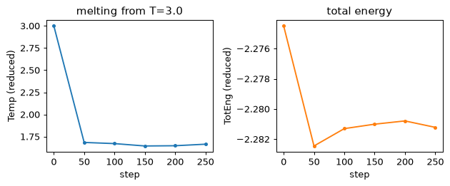
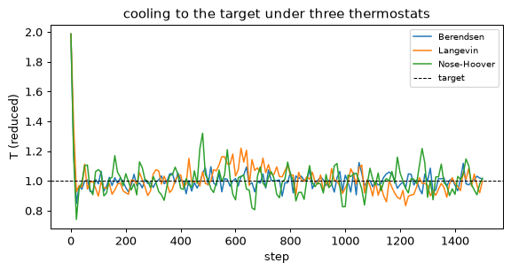
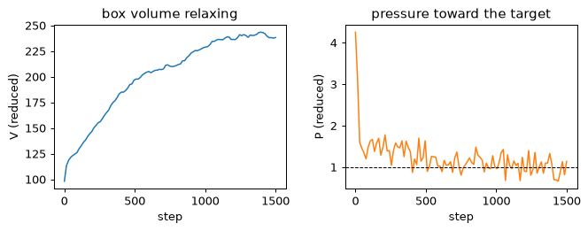
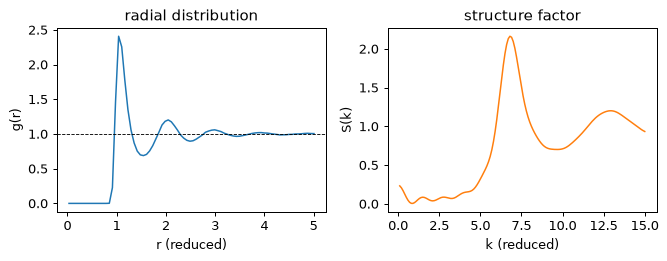
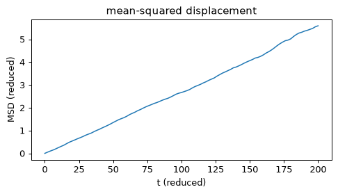
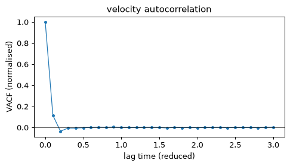

A Lennard-Jones melt end to end -- Spec, check, run, read the log, plot -- through the checker's fourteen rules, one at a time.
One simulation, start to finish
Fourteen rules, each pointing at a manual page
All fourteen, confirmed at once
A Spec, rendered -- not a script typed by hand
run_or_load: the pattern every later lecture uses

The LJ melt's thermo history read back from the log: temperature falling away from the T=3.0 start (left) while the total energy holds flat (right) -- the two curves run() reads out of LAMMPS's own thermo output, whether this cell just ran the case or loaded a stored record. — Figure 1 · notebook §0 · chapter 1, cell 12
L2 · notebook ch02
Forces and Integration
Velocity Verlet in mdlite, forces checked against a numerical derivative, and energy conservation against the timestep, cross-checked with LAMMPS at 3e-13.
Integration is the part that must not be approximate
A force worth integrating with is -dE/dx, to the last digit available
Energy conservation is a rate statement, not a pass/fail
Across the toolkit boundary: mdlite vs a real LAMMPS run
Velocity Verlet, the update every step of this course runs
L3 · notebook ch03
Thermostats
Berendsen, Langevin and a Nose-Hoover chain: what each one conserves, what each distorts, and NVT checked against the NIST reference within 3 sigma.
Three ways to hold a temperature
Three thermostats, three different promises
Nosé–Hoover's own check: a conserved quantity
Against a published reference, with no LAMMPS on either side
Berendsen's rescaling, in one line

Temperature against step for the same fcc lattice, started hot (T~2) and cooled by three thermostats -- Berendsen, Langevin, Nose-Hoover chain -- each converging toward the target (dashed line) by its own route. — Figure 1 · notebook §0 · chapter 3, cell 4
L4 · notebook ch04
Ensembles and Restarts
An NPT sketch with its limits stated, LAMMPS's own fix npt, and restarting a run through write_restart / read_restart.
Beyond NVT: pressure, and picking a run back up
fix npt: the real thing the sketch stands in for
A restart script declares only what the restart does not carry
The continuation, in numbers
Berendsen barostat: the same weak-coupling idea, on the box

The NPT run started denser than its target pressure: box volume expands (left) while the instantaneous pressure relaxes down toward the target of 1.0 (right, dashed) under the Berendsen barostat. — Figure 1 · notebook §0 · chapter 4, cell 5
L5 · notebook ch05
Potentials: EAM
An embedded-atom potential read from a real setfl file: copper's lattice constant and cohesive energy against the recorded 3e-5 -- and why the potential file is never shipped.
A real potential, from a real file
L6 · notebook ch06
Structure and Analysis
Radial distribution function, structure factor, mean-squared displacement, diffusion coefficient and velocity autocorrelation, computed from one trajectory.
Turning a trajectory into physics
From a trajectory to a diffusion coefficient

The liquid's structure in real and reciprocal space from the same trajectory: the radial distribution function g(r) (left) with its first-neighbour peak and decay to the ideal-gas value of 1, and the structure factor S(k) (right) computed from it. — Figure 1 · notebook §0 · chapter 6, cell 6

Mean-squared displacement against time: the slope of its later, genuinely diffusive part (not the early ballistic rise) is the Einstein-relation fit lammpskill.post.diffusion_coefficient reports as D. — Figure 2 · notebook §0 · chapter 6, cell 8

The velocity autocorrelation function, normalised to 1 at zero lag: a liquid decays roughly monotonically toward zero rather than oscillating, which is itself evidence the case really is a liquid. — Figure 3 · notebook §0 · chapter 6, cell 10
L7 · notebook ch07
Minimisation
Steepest descent against FIRE on an LJ wall -- and the lesson that gives lost atoms their name: an uncapped step explodes at fmax 2.6e14.
Why atoms get "lost"
L8 · notebook ch08
Reading What LAMMPS Writes
Data, dump, log and restart formats, and four pitfalls this project hit first: thermo normalisation, dump precision, the restart magic number, multi-format logs.
Four formats, four pitfalls
L9 · notebook ch09
Choosing a Build
What a 314-case sweep of the examples says: package list beats package count, and how to read Installation.packages before choosing styles.
The build you have decides what you can run
L10 · notebook ch10
Scaling and Limits
MPI and OpenMP speed-up on eight cores, where it stops, and what this machine honestly cannot do -- no GPU, no -partition methods.
Where speed-up stops, and what this machine cannot do